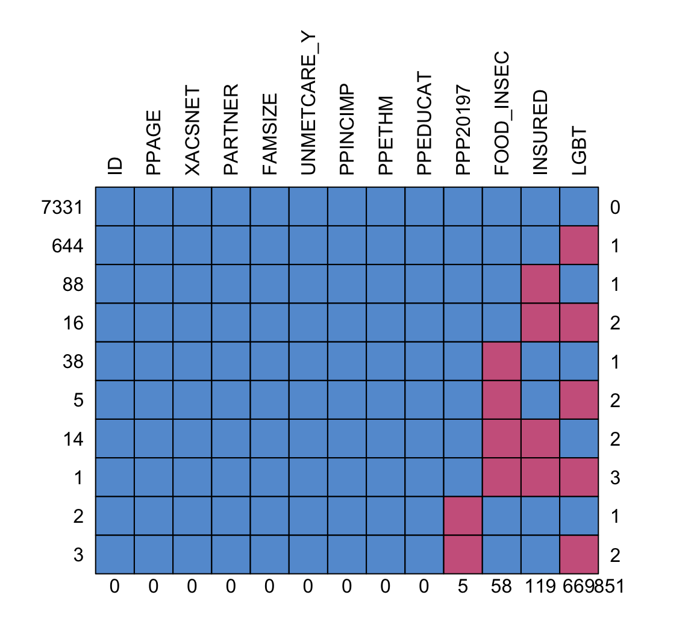

library(here)
library(tidyverse)
library(mice)
library(naniar)
library(gtsummary)Missing Data
load(here("project", "data", "wbns_data.rda"))My variables:
Outcome: food insecurity
Predictors:
- PPAGE: Age
- LGBT: Gay or lesbian, bisexual, or transgender (re-coded)
- XACSNET: Internet access
- PARTNER: Living with a partner
- FAMSIZE: Family size - field data and imputed
- INSURED: Insured at time of survey
- UNMETCARE_Y: Needed medical care but did not get it because could not afford it in past 12 months
- PPP20197: Citizen
- PPINCIMP: Household income
- PPETHM: Race/ethnicity
You should only need to replace my dataset name with yours and my use of variable names with your project’s variables.
There are two blank sections that I invite you to try to complete. These are both important parts of quality assurance. It’s good to check that the distribution of fully observed variables are not different in the missing vs. observed groups of our variables with missing data. Also, it is important to see how our imputed data look if we place it back with the observed data. Do they stand out? I hope not! (I was going to provide code for this, but it’s not new stuff. You can visualize these! … And I really ran out of time this week :( )
Citizenship had missing data that was not coded as NA
I’m using the replace_with_na function to change the missing category to NA.
summary(wbns) ID FOOD_INSEC PPAGE LGBT XACSNET
Length:8142 No :6015 Min. :18.00 No :6852 No : 378
Class :character Yes :2069 1st Qu.:36.00 Yes : 621 Yes:7764
Mode :character NA's: 58 Median :47.00 NA's: 669
Mean :45.92
3rd Qu.:57.00
Max. :64.00
PARTNER FAMSIZE INSURED UNMETCARE_Y PPP20197
No :7326 2 :3009 No : 856 No :6725 Yes :6825
Yes: 816 1 :2753 Yes :7167 Yes:1417 Missing : 5
3 : 986 NA's: 119 No : 470
4 : 880 Not asked: 842
5 : 336
6 : 114
(Other): 64
PPINCIMP PPETHM
Less than $5,000 : 717 White, Non-Hispanic :4738
$100,000 to $124,999: 641 2+ Races, Non-Hispanic: 238
$15,000 to $19,999 : 511 Black, Non-Hispanic :1023
$20,000 to $24,999 : 499 Hispanic :1473
$60,000 to $74,999 : 443 Other, Non-Hispanic : 670
$150,000 to $174,999: 423
(Other) :4908
PPEDUCAT
Less than high school : 613
Bachelor's degree or higher:3041
High school :1940
Some college :2548
wbns_miss = wbns %>%
replace_with_na(replace = list(PPP20197 = "Missing"))
# If Missing, replace with NA, if not then keep value as is
summary(wbns_miss) ID FOOD_INSEC PPAGE LGBT XACSNET
Length:8142 No :6015 Min. :18.00 No :6852 No : 378
Class :character Yes :2069 1st Qu.:36.00 Yes : 621 Yes:7764
Mode :character NA's: 58 Median :47.00 NA's: 669
Mean :45.92
3rd Qu.:57.00
Max. :64.00
PARTNER FAMSIZE INSURED UNMETCARE_Y PPP20197
No :7326 2 :3009 No : 856 No :6725 Yes :6825
Yes: 816 1 :2753 Yes :7167 Yes:1417 Missing : 0
3 : 986 NA's: 119 No : 470
4 : 880 Not asked: 842
5 : 336 NA's : 5
6 : 114
(Other): 64
PPINCIMP PPETHM
Less than $5,000 : 717 White, Non-Hispanic :4738
$100,000 to $124,999: 641 2+ Races, Non-Hispanic: 238
$15,000 to $19,999 : 511 Black, Non-Hispanic :1023
$20,000 to $24,999 : 499 Hispanic :1473
$60,000 to $74,999 : 443 Other, Non-Hispanic : 670
$150,000 to $174,999: 423
(Other) :4908
PPEDUCAT
Less than high school : 613
Bachelor's degree or higher:3041
High school :1940
Some college :2548
Look at the missing data pattern
Now I can look at the missing data pattern.
md.pattern(wbns_miss, rotate.names = T)
ID PPAGE XACSNET PARTNER FAMSIZE UNMETCARE_Y PPINCIMP PPETHM PPEDUCAT
7331 1 1 1 1 1 1 1 1 1
644 1 1 1 1 1 1 1 1 1
88 1 1 1 1 1 1 1 1 1
16 1 1 1 1 1 1 1 1 1
38 1 1 1 1 1 1 1 1 1
5 1 1 1 1 1 1 1 1 1
14 1 1 1 1 1 1 1 1 1
1 1 1 1 1 1 1 1 1 1
2 1 1 1 1 1 1 1 1 1
3 1 1 1 1 1 1 1 1 1
0 0 0 0 0 0 0 0 0
PPP20197 FOOD_INSEC INSURED LGBT
7331 1 1 1 1 0
644 1 1 1 0 1
88 1 1 0 1 1
16 1 1 0 0 2
38 1 0 1 1 1
5 1 0 1 0 2
14 1 0 0 1 2
1 1 0 0 0 3
2 0 1 1 1 1
3 0 1 1 0 2
5 58 119 669 851Looks like citizenship, food insecurity, insurance, and identifying as LGBT have missing data.
Check the distributions of the variables from the observed vs. missing data
Use mice to impute data
Now we can use the mice() function to impute the data.
Let’s break down what I’m using in the function below:
I set
m=5as the number of imputations that I will be runningI set
print = Fso I don’t get the message as it imputesI set
defaultMethod = c("norm", "logreg", "polyreg", "polr")- This means
micewill determine which method to use based on the type of variable - For binary variables it will use “logreg.” Thus, it will use logistic regression to predict the missing values. This will include food insecurity, insured, and LGBT variables in my data.
- For continuous variables, it will use “norm.predict” which will consist of predicting the missing values from linear regression. I don’t have any missing continuous values, so this one is not used.
- For multi-level categorical varaibles, we use “polyreg” which is a type of logistic regression that is expanded to handle multiple levels of outcomes. This will include citizenship in my data.
- For ordinal variables, we use “polr” which is a proportional odds model, another type of generalized linear regression model that handles ordered categories. I don’t have any missing ordinal variables, so this one is not used.
- This means
wbns_MI_5 = mice(wbns_miss, m=5, print = F,
defaultMethod = c("norm.predict", "logreg", "polyreg", "polr"))Warning: Number of logged events: 76Complete data
It’s hard to parse through the output of mice, but we can take a look at one of the imputation’s complete (aka filled in) data. Below I will look at the first imputation (hence the 1). You can change the 1 to anything up to 5 to see the different imputations.
d1 = complete(wbns_MI_5, 1)
summary(d1) ID FOOD_INSEC PPAGE LGBT XACSNET PARTNER
Length:8142 No :6054 Min. :18.00 No :7445 No : 378 No :7326
Class :character Yes:2088 1st Qu.:36.00 Yes: 697 Yes:7764 Yes: 816
Mode :character Median :47.00
Mean :45.92
3rd Qu.:57.00
Max. :64.00
FAMSIZE INSURED UNMETCARE_Y PPP20197
2 :3009 No : 877 No :6725 Yes :6827
1 :2753 Yes:7265 Yes:1417 Missing : 0
3 : 986 No : 472
4 : 880 Not asked: 843
5 : 336
6 : 114
(Other): 64
PPINCIMP PPETHM
Less than $5,000 : 717 White, Non-Hispanic :4738
$100,000 to $124,999: 641 2+ Races, Non-Hispanic: 238
$15,000 to $19,999 : 511 Black, Non-Hispanic :1023
$20,000 to $24,999 : 499 Hispanic :1473
$60,000 to $74,999 : 443 Other, Non-Hispanic : 670
$150,000 to $174,999: 423
(Other) :4908
PPEDUCAT
Less than high school : 613
Bachelor's degree or higher:3041
High school :1940
Some college :2548
See how the imputed values look within the observed values
Fit regression with imputations
Below is how we run a regression model with the output from mice (wbns_MI_5). We use the with function that can be read as: With wbns_MI_5, run the following glm function. It will automatically know to know 5 different regressions, one with each imputed dataset.
reg = with(wbns_MI_5, glm(FOOD_INSEC ~ PPAGE + LGBT + XACSNET + PARTNER +
FAMSIZE + INSURED + UNMETCARE_Y + PPP20197 +
PPETHM, family = binomial))Once I have fit the regression model with each imputed dataset, I can pool the results. The mice function will use Rubin’s Rules to pool the estimates and variances. Note the use of the pool function!
pooled_reg_MI = pool(reg)
mi_reg = summary(pooled_reg_MI, conf.int = TRUE)
mi_reg term estimate std.error statistic df
1 (Intercept) -0.937930476 0.183644159 -5.1073254 3621.51082
2 PPAGE 0.004075098 0.002358548 1.7277999 3400.38115
3 LGBTYes 0.267204630 0.106641668 2.5056306 80.27778
4 XACSNETYes -0.532969377 0.120918557 -4.4076723 2770.70564
5 PARTNERYes 0.740565439 0.091897054 8.0586418 7615.21238
6 FAMSIZE2 -0.662367018 0.071654539 -9.2438948 5978.02824
7 FAMSIZE3 -0.318385223 0.094241917 -3.3783823 7152.87307
8 FAMSIZE4 -0.386242762 0.100375683 -3.8479715 7970.35101
9 FAMSIZE5 -0.096660785 0.140764969 -0.6866821 7724.53666
10 FAMSIZE6 -0.141698224 0.233709142 -0.6063016 8080.85045
11 FAMSIZE7 -0.177876415 0.383625529 -0.4636720 8110.70643
12 FAMSIZE8 or more 0.703090607 0.455466925 1.5436700 8078.48213
13 INSUREDYes -0.255443126 0.087038956 -2.9348138 1230.68547
14 UNMETCARE_YYes 1.639080123 0.065242885 25.1227415 7315.88489
15 PPP20197No 0.179074669 0.126183836 1.4191570 3355.01475
16 PPP20197Not asked 0.639561784 0.084435763 7.5745367 4080.50853
17 PPETHM2+ Races, Non-Hispanic 0.622280239 0.151540002 4.1063761 6554.45240
18 PPETHMBlack, Non-Hispanic 0.482694291 0.083523795 5.7791230 1789.24314
19 PPETHMHispanic 0.571844693 0.076483630 7.4766940 6510.69455
20 PPETHMOther, Non-Hispanic -0.548466076 0.128972371 -4.2525858 8085.00758
p.value 2.5 % 97.5 %
1 3.436005e-07 -1.2979867501 -0.577874202
2 8.411490e-02 -0.0005492161 0.008699412
3 1.424530e-02 0.0549922199 0.479417041
4 1.084614e-05 -0.7700689688 -0.295869785
5 8.890769e-16 0.5604218905 0.920708987
6 3.239130e-20 -0.8028357733 -0.521898262
7 7.330297e-04 -0.5031272481 -0.133643199
8 1.200297e-04 -0.5830053645 -0.189480159
9 4.923037e-01 -0.3725982918 0.179276721
10 5.443315e-01 -0.5998283453 0.316431896
11 6.428952e-01 -0.9298808559 0.574128026
12 1.227075e-01 -0.1897419305 1.595923144
13 3.399412e-03 -0.4262042835 -0.084681968
14 1.144568e-133 1.5111852596 1.766974986
15 1.559462e-01 -0.0683303580 0.426479697
16 4.431806e-14 0.4740216271 0.805101941
17 4.068018e-05 0.3252124363 0.919348043
18 8.839157e-09 0.3188798460 0.646508735
19 8.623851e-14 0.4219116603 0.721777726
20 2.136949e-05 -0.8012851257 -0.295647026We can do an informal sensitivity analysis
Here I am simply running a logistic regression model using our complete data. We can compare the estimates from this model to the pooled estimates from the multiply imputed datasets.
wbns_cc = wbns_miss %>% drop_na()
reg_cc = glm(FOOD_INSEC ~ PPAGE + LGBT + XACSNET + PARTNER +
FAMSIZE + INSURED + UNMETCARE_Y + PPP20197 +
PPETHM, family = binomial, data = wbns_cc)
cc_reg = summary(reg_cc)I will put the estimates side-by-side now.
estimates = cbind(Mult_imp = mi_reg$estimate,
Complete_case = cc_reg$coefficients[,1])
estimates Mult_imp Complete_case
(Intercept) -0.937930476 -0.923507128
PPAGE 0.004075098 0.003963706
LGBTYes 0.267204630 0.253429229
XACSNETYes -0.532969377 -0.537266195
PARTNERYes 0.740565439 0.756557601
FAMSIZE2 -0.662367018 -0.733347778
FAMSIZE3 -0.318385223 -0.431279163
FAMSIZE4 -0.386242762 -0.469643349
FAMSIZE5 -0.096660785 -0.136786735
FAMSIZE6 -0.141698224 -0.333273866
FAMSIZE7 -0.177876415 -0.158287657
FAMSIZE8 or more 0.703090607 0.698218128
INSUREDYes -0.255443126 -0.242185879
UNMETCARE_YYes 1.639080123 1.739880532
PPP20197No 0.179074669 0.239127321
PPP20197Not asked 0.639561784 0.596022881
PPETHM2+ Races, Non-Hispanic 0.622280239 0.641231577
PPETHMBlack, Non-Hispanic 0.482694291 0.457402801
PPETHMHispanic 0.571844693 0.535396844
PPETHMOther, Non-Hispanic -0.548466076 -0.541533105The most important thing I am noting is that:
- The complete case estimates have the same signs as the pooled.
- For the most part, the magnitude of the estimates have not changed by much. Family size seems to be the most impacted.
Now we can proceed with the other parts of Lab 3
Below is some sample code for how I would make a tidy dataset or an odds ratio table from the pooled results! From reg and pooled_reg_MI you should be able to do everything else in Lab 3!
tidy(pooled_reg_MI, exponentiate=T) term estimate std.error statistic p.value
1 (Intercept) 0.3914371 0.183644159 -5.1073254 3.436005e-07
2 PPAGE 1.0040834 0.002358548 1.7277999 8.411490e-02
3 LGBTYes 1.3063077 0.106641668 2.5056306 1.424530e-02
4 XACSNETYes 0.5868598 0.120918557 -4.4076723 1.084614e-05
5 PARTNERYes 2.0971210 0.091897054 8.0586418 8.890769e-16
6 FAMSIZE2 0.5156294 0.071654539 -9.2438948 3.239130e-20
7 FAMSIZE3 0.7273226 0.094241917 -3.3783823 7.330297e-04
8 FAMSIZE4 0.6796055 0.100375683 -3.8479715 1.200297e-04
9 FAMSIZE5 0.9078639 0.140764969 -0.6866821 4.923037e-01
10 FAMSIZE6 0.8678831 0.233709142 -0.6063016 5.443315e-01
11 FAMSIZE7 0.8370459 0.383625529 -0.4636720 6.428952e-01
12 FAMSIZE8 or more 2.0199861 0.455466925 1.5436700 1.227075e-01
13 INSUREDYes 0.7745732 0.087038956 -2.9348138 3.399412e-03
14 UNMETCARE_YYes 5.1504296 0.065242885 25.1227415 1.144568e-133
15 PPP20197No 1.1961101 0.126183836 1.4191570 1.559462e-01
16 PPP20197Not asked 1.8956500 0.084435763 7.5745367 4.431806e-14
17 PPETHM2+ Races, Non-Hispanic 1.8631717 0.151540002 4.1063761 4.068018e-05
18 PPETHMBlack, Non-Hispanic 1.6204344 0.083523795 5.7791230 8.839157e-09
19 PPETHMHispanic 1.7715320 0.076483630 7.4766940 8.623851e-14
20 PPETHMOther, Non-Hispanic 0.5778355 0.128972371 -4.2525858 2.136949e-05
b df dfcom fmi lambda m riv
1 6.881461e-04 3621.51082 8122 0.025023713 0.0244854257 5 0.0251000102
2 1.200467e-07 3400.38115 8122 0.026468993 0.0258965607 5 0.0265850213
3 2.101980e-03 80.27778 8122 0.240486487 0.2217971585 5 0.2850120132
4 3.726763e-04 2770.70564 8122 0.031285310 0.0305863079 5 0.0315513471
5 3.850978e-05 7615.21238 8122 0.005733130 0.0054720377 5 0.0055021456
6 5.578644e-05 5978.02824 8122 0.013368377 0.0130383463 5 0.0132105905
7 5.859371e-05 7152.87307 8122 0.008193975 0.0079166967 5 0.0079798710
8 2.354474e-05 7970.35101 8122 0.003054391 0.0028042591 5 0.0028121451
9 7.893745e-05 7724.53666 8122 0.005038097 0.0047805200 5 0.0048034832
10 5.998177e-05 8080.85045 8122 0.001564880 0.0013177987 5 0.0013195376
11 6.675022e-05 8110.70643 8122 0.000790638 0.0005442757 5 0.0005445721
12 2.357154e-04 8078.48213 8122 0.001610643 0.0013635010 5 0.0013653627
13 3.298855e-04 1230.68547 8122 0.053790159 0.0522537123 5 0.0551347053
14 2.523622e-05 7315.88489 8122 0.007385738 0.0071144161 5 0.0071653937
15 3.476233e-04 3355.01475 8122 0.026778865 0.0261988792 5 0.0269037267
16 1.297113e-04 4080.50853 8122 0.022311721 0.0218326393 5 0.0223199425
17 2.028729e-04 6554.45240 8122 0.010902859 0.0106010955 5 0.0107146829
18 2.412188e-04 1789.24314 8122 0.042562349 0.0414927315 5 0.0432889064
19 5.259138e-05 6510.69455 8122 0.011092177 0.0107884438 5 0.0109061037
20 1.710847e-05 8085.00758 8122 0.001481213 0.0012342385 5 0.0012357637
ubar
1 3.289940e-02
2 5.418691e-06
3 8.850069e-03
4 1.417409e-02
5 8.398857e-03
6 5.067429e-03
7 8.811227e-03
8 1.004702e-02
9 1.972005e-02
10 5.454798e-02
11 1.470884e-01
12 2.071673e-01
13 7.179917e-03
14 4.226351e-03
15 1.550521e-02
16 6.973744e-03
17 2.272092e-02
18 6.686762e-03
19 5.786636e-03
20 1.661334e-02tbl_regression(reg, exponentiate = T) # Note I am not using the pooled results| Characteristic | OR1 | 95% CI1 | p-value |
|---|---|---|---|
| PPAGE | 1.00 | 1.00, 1.01 | 0.084 |
| LGBT | |||
| No | — | — | |
| Yes | 1.31 | 1.06, 1.62 | 0.014 |
| XACSNET | |||
| No | — | — | |
| Yes | 0.59 | 0.46, 0.74 | <0.001 |
| PARTNER | |||
| No | — | — | |
| Yes | 2.10 | 1.75, 2.51 | <0.001 |
| FAMSIZE | |||
| 1 | — | — | |
| 2 | 0.52 | 0.45, 0.59 | <0.001 |
| 3 | 0.73 | 0.60, 0.87 | <0.001 |
| 4 | 0.68 | 0.56, 0.83 | <0.001 |
| 5 | 0.91 | 0.69, 1.20 | 0.5 |
| 6 | 0.87 | 0.55, 1.37 | 0.5 |
| 7 | 0.84 | 0.39, 1.78 | 0.6 |
| 8 or more | 2.02 | 0.83, 4.93 | 0.12 |
| INSURED | |||
| No | — | — | |
| Yes | 0.77 | 0.65, 0.92 | 0.003 |
| UNMETCARE_Y | |||
| No | — | — | |
| Yes | 5.15 | 4.53, 5.85 | <0.001 |
| PPP20197 | |||
| Yes | — | — | |
| No | 1.20 | 0.93, 1.53 | 0.2 |
| Not asked | 1.90 | 1.61, 2.24 | <0.001 |
| PPETHM | |||
| White, Non-Hispanic | — | — | |
| 2+ Races, Non-Hispanic | 1.86 | 1.38, 2.51 | <0.001 |
| Black, Non-Hispanic | 1.62 | 1.38, 1.91 | <0.001 |
| Hispanic | 1.77 | 1.52, 2.06 | <0.001 |
| Other, Non-Hispanic | 0.58 | 0.45, 0.74 | <0.001 |
| 1 OR = Odds Ratio, CI = Confidence Interval | |||
# tble_regression will automatically pool them!